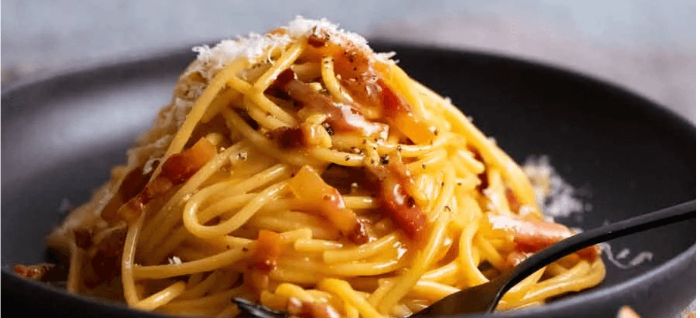

Carbonara

Description
This recipe for carbonara is great
Ingredients
- 6 oz pancetta
- 2 large eggs
- 2 egg yolks
- 3.5 oz parmigiano reggiano
- 1/4 tsp black pepper
- 14 oz spaghetti
- 1 tablespoon salt
- 1/2 cup pasta cooking water
- 1 garlic clove
Steps
- Cut pancetta into 1/5 inch thick slices then
into batons
-
Place eggs and yolksin a large bowl. Whisk to combine.
Then stir in the parmesan and pepper.
-
Bring 4 litres (4 quarts) of water to the boil with
the salt. Add pasta and cook per the packet directions.
- Just before draining, scoop out 1 cup of pasta
cooking water, then drain the pasta.
-
While the pasta is cooking, place pancetta in a non stick
pan over medium high heat. Cook for 4 to 5 minutes until
golden. No oil needed – as the pancetta heats up, the fat
will melt so it fries in its own fat. If using garlic, add
it in the last minute.
-
Tip the hot pasta into the pan and toss to coat in pancetta fat
-
Transfer the pasta and any residual fat in the pan into the bowl
with the egg. Add 1/2 cup (125 ml) pasta cooking water. Stir
vigorously using the handle of a wooden spoon for 1 minute and
watch as the sauce transforms from watery to creamy and clings
to the pasta strands!